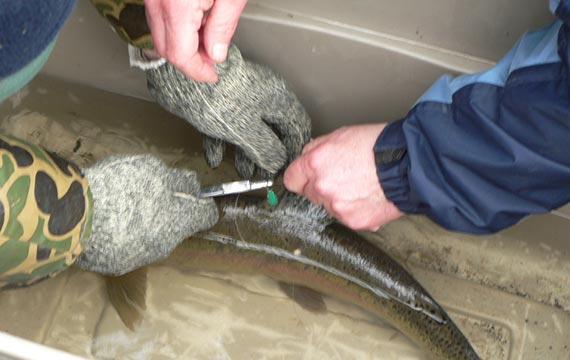

Mobile-Navigation

Hero Section
Hands-on Environmentalism
"Hands-on Environmentalism" is what we do
This is what sets the TRAA apart from
other clubs and organizations. You'll find
us right in the water clearing obstructio-
ns from streams, measuring returning
salmonids & taking scale samples for
DNA analysis, education through trout
hatchery tours & stream walks, being a
voice for the Thames River watershed
& its inhabitants and the list goes on.
First project
Salmonid Monitering Program
Here's an overview of what happened
over a few weekends in the Spring of
2012 when TRAA members and person-
nel from the Upper Thames River Conse-
rvation Authority (UTRCA) waded in for
Year 3 of our 5-year Salmonid Tagging
and Monitoring Program.
Jon George, an MNR biologist from Thun-
der Bay who is helping us out with this
project, compiled the comparative results
of 2010 (Year 1) and 2011 (Year 2) and
2012 (Year 3) in an easy-to-understand
report.
One of the really awesome aspects of
capturingthe returning rainbow trout is
you don't always get what you expect.

The "sewing" of a small, plastic tag to
the dorsal fin of the rainbow trout is act-
ually the trickiest of all the procedures
performed.
Second project
TRAA Trout Hatchery: Rearing both brown and rainbow trout.
The tray-style of egg incubation in the
picture on the left was used for many
years after the enclosure was built. It had
its faults but as you can see, the comfort
level for the egg pickers was beyond
compare.
The whole operation with the trays on the
right side and the 6' diameter circular
growth tank Note the green automatic
feeder hanging over the tank. This was of
TRAA design and manufacture and outp-
erforms any of the commercial feeders
we encountered.

The water source originates from an underground
spring uphill from the hatchery.
The water is collected in an above-ground horizontal
cistern that feeds a 4-inch
source pipe. The head pressure created
by the elevation drop provides all the water required without dependence on
pumps and power.
Always looking to improve, the TRAA Tout
Committee began looking at ways to
emulate the success we had with the upwelling
box when it was outside. To that
end we had a new one constructed by the
carpentry class at H.B. Beal Secondary
School and they did a great job!
Third project
Past Project: TRAA Wall Hatchery
Summary : The TRAA and the Upper Tha-
mes River Conservation Authority,with the
blessing of the Ministry of Natural Resour-
ces, agreed to the operation of a walleye
hatchery in Fanshawe Conservation Area,
just north-east of London, Ontario. While
this was a relatively short-lived initiative, it
was very popular withmembers and the
community at large. Many would conclude
it was also very successful considering the
exciting fishery that developed closely
thereafter.
The Lake Erie Management Unit (LEMU) forced the TRAA to shut down the walleye hatchery after only three seasons of opera- tion. The LEMU's decision was dubiously based on an American study, that the Tha- mes River walleye were genetically unique from the Grand River walleye (the TRAA's source for eggs).Interestingly, walleye (from egg through adult stages) continue to be transferred throughout Ontario wat- erways and water bodies seemingly witho- ut regard for genetic purity
The Lake Erie Management Unit (LEMU) forced the TRAA to shut down the walleye hatchery after only three seasons of opera- tion. The LEMU's decision was dubiously based on an American study, that the Tha- mes River walleye were genetically unique from the Grand River walleye (the TRAA's source for eggs).Interestingly, walleye (from egg through adult stages) continue to be transferred throughout Ontario wat- erways and water bodies seemingly witho- ut regard for genetic purity
The UTRCA offered the use of a repossessed
house trailer as an enclosure for
the walleye hatchery operations. The trailer
was gutted and refitted with the hatc
hery equipment and all that was needed
was a source for walleye eggs.

After a couple of initial trial hatches of
walleye, the TRAA was confident enough to
locate the walleye hatchery in a more permanent
and secure location within Fanshawe Conservation Area.
Painting the Walleye Hatchery "TRAA
green". Note the outlet from the hatchery
into the outdoor circular growth tank. The
awning offered much needed shade to
keep the water in the tank from heating
up too much (even so, dedicated members
were packing it with ice during the
ottest days).

Here you can see all five bell jars loaded with walleye eggs.
Once the fry hatch, they naturally swim upward and aretaken away
by the clear tube, into the black drain to the outside circular growth tank.
The fry were kept only for a short period of time in the growth tank as they became cannibalistic. After their short growth period they were released into weedy, protected areas in Fanshawe Reservoir to begin their new lives.
The fry were kept only for a short period of time in the growth tank as they became cannibalistic. After their short growth period they were released into weedy, protected areas in Fanshawe Reservoir to begin their new lives.
Forth project
Past Project: TRAA Stream Rehabilitation
This badly eroded section of Komoka Creek afforded
an opportunity to install a series of "lunker structures"
that create habitat for trout and other stream inhabitants.
Thesestructures will also combat further erosion at this
vulnerable site. Victor Fulcher, Jeremy Beaton and Paul
Holmes check out the site. The stream actually flows under this
structureabout as far back as where Paul is standing.
Randy Bailey and Paul Holmes check out the depth of the stream
under the lunker structures as well as how far back the stream flows
under these structures. The stick Randy's using is about a metre long!
Note the vegetation that is already taking hold on thetop of the
structure. Native grasses and other plantswill have covered the area by
the spring of 2012 sothat the work that was done here will be
indistinguishable from the surrounding streambanks.
The TRAA has been at this habitat improvement game
for a while and some of the structures have served
their purposes. Some of them actually need to be
removed or modified as the streamres ponds to the
changes. What remains of many of these structures
are the T-bars that were driven into the streambed
toanchor them in place. Most required
a tow strap, a pry bar and a come-along to be pulled
from the streambed.It's tough work but they were all eventually removed.

Randy cuts a log to size for a deflector. A deflector is an
in-stream device that "steers" the stream's flow. This can
be useful in protecting vulnerable areas from erosion. Another
use is for speeding flow and creating depth. This does three
things: it improves oxygenation of the
water, it stabilizes water temperatures at a cooler level
and it improves
the stream's ability to carry silt.